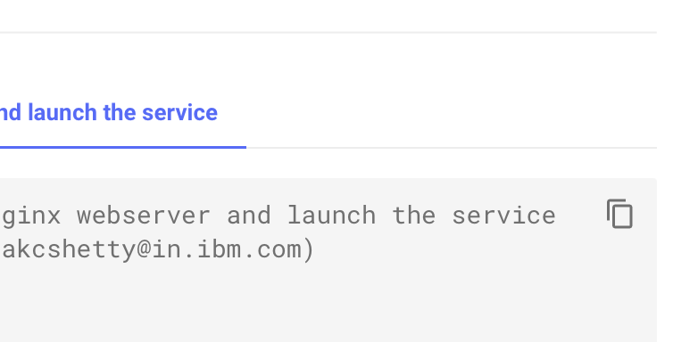
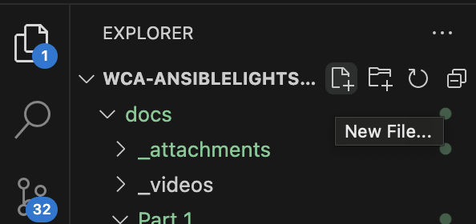

Hands-on: Customizing Ansible Tasks with IBM watsonx Code Assistant for Ansible Lightspeed
In the following module, you will begin experimentating with customized Ansible Playbooks and testing how changes to Ansible Task natural language descriptions impacts the recommended code produced by Generative AI. A sample Playbook is supplied for you below.
- Copy the contents above to clipboard using the button in the top-right corner of the code block.

- Return to your VS Code environment. In the top-left corner of the interface, with your Ansible Lightspeed folder selected, click the New File... button.

-
Name the file to a description of your choosing, ending with
.ymlas the filetype. Set it toCustomPlaybook.yml, for example. -
Paste the clipboard contents into the YAML file and follow along with the suggestions below.
Precision is key for disambiguation of natural language prompts.
Custom Playbook #1 (above) contains 2 sets of tasks:
-
Task 1 (
Lines 5-20) checks whether or not web server software is up to date and runs the update if necessary. -
Task 2 (
Lines 22-36) checks whether or not database server software is up to date and runs the update if necessary.
Consider the following Task (Line 16), which prompts Ansible to create ("write") a configuration file for an Apache webserver:
Two tabs are presented below. The first AI-Generated Code tab shows the output from running Ansible Lightspeed's generative AI capabilities on an unmodified version of this Playbook. The second Solution Code tab shows the expected Task code that was written (and commented out) by a human to perform the same task. In theory, the suggested code should be as good— or even superior to —the manually-written solution code.
Let's examine that theory in practice:
As you can see, the AI-Generated Code in the first tab misses the mark in a few areas. In fact, it appears to have misunderstood the task in quite a few ways. There is no corresponding value to _content_ that can be located within the Ansible Playbook, at least not any which you (the author) have defined ahead of time. Such a result is unexpected and does not match the intention of writing an Apache configuration file to standards/best practices. Similarly, the destination has been inferred differently and the access permissions that should have been applied to the config file (again - according to Red Hat best practices) is missing altogether.
WHY THE UNEXPECTED RESULTS?
Something has gone wrong — is Ansible Lightspeed at fault? The root cause of the error, in fact, is human. The precision with which the Playbook author describes the automation Task in natural language will determine the accuracy and effectiveness of Ansible Lightspeed's generated code suggestions.
In general, the more ambiguous the Task description given, the greater the likelihood that Ansible Lightspeed will misinterpret the author's intent and suggest unwanted Ansible automation jobs. To help disambiguate our intention, we as Playbook authors can use more precise natural language terms and descriptions.
Let's slightly modify the Task description. Try revising the Task -name: ... description to the following, hit Return, and accept the generated results with the TAB key:
Compare how the AI-generated code suggestions match (or don't) the expected code solution:
The output is closer to the expected on the latest iteration, but still out of alignment in some aspects. The AI-generated code suggestions now correctly include the 06444 read/write/execute permissions that were requested. However, an incorrect destination was suggested (instead of a source) and the content field is a mismatch to the request entirely. One other observation is that the suggested code is invoking the ansible.builtin.copy
package, instead of the expected ansible.builtin.template package.
What happens if we adjust the Task's natural language description to explicitly invoke the .template package? Adjust the Task description to the following and then re-generate the code block using Ansible Lightspeed:
Once again, compare the AI-generated code suggestions to the expected code solution:
Annoyingly, the request to generate "from template" appears to have been misinterpreted once again. Looking at the syntax of the natural language description gives us some clues as to why
-
Line 1 of AI-Generated Code, if you consider it the same way as a natural language processor would, is essentially a string of individual tokens. Every word, number, or character separated by a whitespace (a "tokenizer") is a "token." In our example,modeand0644are separate tokens — and we expect that the natural language capabilities will understand the implied link between these two. But we can make this linkage more explicit by being more exact with how we describe these two elements in the next iteration. Next time, we'll write them as a single token with a very explicit linkage by usingmode='0644'and compare the results. -
Line 2 of AI-Generated Codeonce again failed to invoke the expectedansible.builtin.templatepackage. At this stage, you may speculate that the reason for this is the ambiguity created by the separatemodeand0644tokens that were described previously. We will observe on the next generative iteration whether disambiguation of those two tokens helps clarify the meaning of thefrom templatetokens. -
The
mode:,src:, anddest:fields fromLines 3-5 of Solution Codeare incorrect or missing.
For a third time, let's adjust the natural language description of the Task to the following and then re-generate the code block using Ansible Lightspeed:
Once again, compare the AI-generated code suggestions to the expected code solution:
The resulting code suggestions from a simple tweak of mode 0644 to mode='0644' to disambiguate the purpose of the Task is far better than previous iterations. Not only was the mode: variable correctly set, but the generative AI code correctly picked up on the intention to invoke the Ansible builtin.template package.
The iterative process we have gone through with this example can be viewed in two different ways.
-
On the one hand, it shows the sensitivity of these generative AI models to even the most nuanced change in natural language prompts — for good or bad. Generative AI can produce tremendous work and that output is further guided along by best practices built-in from Red Hat and IBM. But in the end, the AI can only infer user intent from the natural language descriptions supplied to it. The less vague our descriptions of intent, the more likely it will correctly generate code that mirrors that intent (and conversely — the less precise we are, the more likely it will misinterpret and miss the mark). Precision is key to the disambiguation of natural language prompts.
-
Human feedback and humans-in-the-loop are essential to these formative stages of Generative AI. As offerings like IBM watsonx Code Assistant for Red Hat Ansible Lightspeed achieve general availability (GA) status and exit the Tech Preview phase, the natural language processing capabilities of the service will continue to refine and improve. Additional packages, functions, and training data from Ansible Galaxy (as well as other sources) are continuously being added to the service's Foundation Models, which will in turn continually improve the AI-generated code recommendations made to users. Feedback can be directly supplied via the Ansible Lightspeed Code VS extension and additional ways to support model training are documented online.
LEVEL 3 ACCREDITATION
IBMers should take the time now to prepare for and record their Stand & Deliver presentations for Level 3 accreditation. Be sure to follow the evaluation criteria that is outlined in this documentation.
Business Partners should follow the learning plan links on IBM Training to complete a multiple-choice examination for Level 3 accreditation.
That concludes the hands-on components to this Level 3 course, but your learning and experimentation doesn't need to end here. Continue to experiment with generating Tasks for Ansible Playbooks. If you have worked extensively with Ansible previously, try recreating Tasks you've written previously from old Playbooks using generative AI (just be careful not to use confidential/sensitive information as part of those tests) – see if you can spot the differences or improvements made from the code recommendations.
Feel free to reach out to the authors of this coursework if you have suggestions of Tasks or code generation techniques that you'd like to see included in future iterations of this hands-on training.